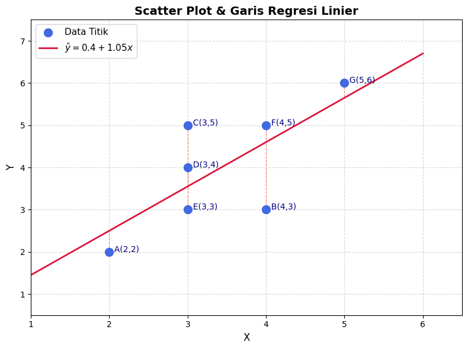
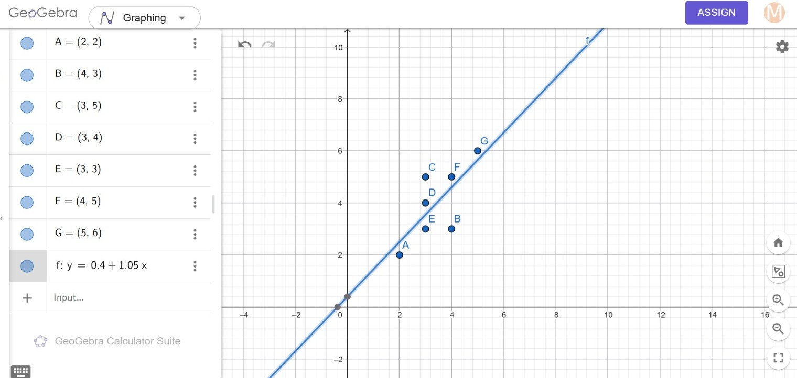

Tugas Linier Regression#
1. Dataset#
Berdasarkan data titik koordinat \((x, y)\) yang diambil dari GeoGebra, didapatkan \(n = 7\) data sebagai berikut:
\(A(2,2)\)
\(B(4,3)\)
\(C(3,5)\)
\(D(3,4)\)
\(E(3,3)\)
\(F(4,5)\)
\(G(5,6)\)
2. Perhitungan secara Analitik (Manual)#
Untuk mencari koefisien regresi \(\beta_0\) (intercept) dan \(\beta_1\) (slope) secara analitik, kita menggunakan Persamaan Normal (Normal Equation):
Di mana:
\(\hat{\beta}\) adalah vektor parameter yang berisi \(\beta_0\) (intercept) dan \(\beta_1\) (slope/koefisien).
\(X\) adalah matriks fitur/prediktor (ditambahkan kolom basis \(1\) untuk intercept).
\(Y\) adalah vektor target/label.
Langkah 1: Inisialisasi Struktur Matriks Awal#
Berdasarkan \(n = 7\) data koordinat dari GeoGebra, setiap data memenuhi persamaan linier \(y_i = \beta_0(1) + \beta_1 x_i\). Kita dapat menyusun data tersebut ke dalam bentuk matriks berikut:
Catatan: Kolom pertama pada matriks \(X\) yang berisi angka \(1\) berfungsi sebagai komponen pengali konstanta \(\beta_0\) agar intercept dapat dihitung secara bersamaan dalam operasi matriks.
Langkah 2: Menghitung Matriks \(X^T X\)#
Pertama, lakukan operasi transpose pada matriks \(X\) (mengubah baris menjadi kolom):
Selanjutnya, kalikan matriks \(X^T\) dengan \(X\) menggunakan aturan perkalian matriks (Baris \(\times\) Kolom):
Kalkulasi detail setiap elemen matriks:
Baris 1, Kolom 1 (\(n\)): \((1\times1) + (1\times1) + (1\times1) + (1\times1) + (1\times1) + (1\times1) + (1\times1) = 7\)
Baris 1, Kolom 2 (\(\sum x\)): \((1\times2) + (1\times4) + (1\times3) + (1\times3) + (1\times3) + (1\times4) + (1\times5) = 24\)
Baris 2, Kolom 1 (\(\sum x\)): \((2\times1) + (4\times1) + (3\times1) + (3\times1) + (3\times1) + (4\times1) + (5\times1) = 24\)
Baris 2, Kolom 2 (\(\sum x^2\)): \((2\times2) + (4\times4) + (3\times3) + (3\times3) + (3\times3) + (4\times4) + (5\times5) = 4 + 16 + 9 + 9 + 9 + 16 + 25 = 88\)
Maka diperoleh hasil: \(X^T X = \begin{pmatrix} 7 & 24 \\ 24 & 88 \end{pmatrix}\)
Langkah 3: Menghitung Matriks \(X^T Y\)#
Kalikan matriks \(X^T\) dengan vektor target \(Y\):
\(X^T Y = \begin{pmatrix} 1 & 1 & 1 & 1 & 1 & 1 & 1 \\ 2 & 4 & 3 & 3 & 3 & 4 & 5 \end{pmatrix} \begin{pmatrix} 2 \\ 3 \\ 5 \\ 4 \\ 3 \\ 5 \\ 6 \end{pmatrix}\)
Kalkulasi detail setiap elemen vektor:
Baris 1 (\(\sum y\)): \((1\times2) + (1\times3) + (1\times5) + (1\times4) + (1\times3) + (1\times5) + (1\times6) = 2 + 3 + 5 + 4 + 3 + 5 + 6 = 28\)
Baris 2 (\(\sum xy\)): \((2\times2) + (4\times3) + (3\times5) + (3\times4) + (3\times3) + (4\times5) + (5\times6) = 4 + 12 + 15 + 12 + 9 + 20 + 30 = 102\)
Maka diperoleh hasil: \(X^T Y = \begin{pmatrix} 28 \\ 102 \end{pmatrix}\)
Langkah 4: Menghitung Invers Matriks \((X^T X)^{-1}\)#
Menggunakan rumus invers matriks ordo \(2 \times 2\): $\(\begin{pmatrix} a & b \\ c & d \end{pmatrix}^{-1} = \frac{1}{ad - bc} \begin{pmatrix} d & -b \\ -c & a \end{pmatrix}\)$
Hitung Determinan (\(ad - bc\)):
\[\text{Determinan} = (7 \times 88) - (24 \times 24) = 616 - 576 = 40\]Substitusi nilai ke dalam rumus invers:
\[\begin{split}(X^T X)^{-1} = \frac{1}{40} \begin{pmatrix} 88 & -24 \\ -24 & 7 \end{pmatrix}\end{split}\]
Langkah 5: Perkalian Akhir Menentukan Vektor Parameter \(\hat{\beta}\)#
Langkah terakhir adalah mengalikan hasil invers matriks dengan vektor \(X^T Y\):
Lakukan perkalian matriks bagian dalam terlebih dahulu:
Elemen Baris 1:
\[(88 \times 28) + (-24 \times 102) = 2464 - 2448 = 16\]Elemen Baris 2:
\[(-24 \times 28) + (7 \times 102) = -672 + 714 = 42\]
Sekarang kalikan nilai skalar determinan (\(\frac{1}{40}\)) ke dalam hasil di atas:
Hasil Analitik: Intercept (\(\beta_0\)) = 0.4, Koefisien (\(\beta_1\)) = 1.05
3. Implementasi Program Python#
Berikut adalah program Python untuk membandingkan hasil estimasi menggunakan library scikit-learn dengan formula analitik menggunakan NumPy.
import numpy as np
from sklearn.linear_model import LinearRegression
# 1. INPUT DATA DARI GEOGEBRA
# Matriks X (Fitur/Prediktor) harus dalam bentuk 2D array [[x]]
X = np.array([[2], [4], [3], [3], [3], [4], [5]])
Y = np.array([[2], [3], [5], [4], [3], [5], [6]])
print("======= METODE 1: SKLEARN =======")
# Inisialisasi dan latih model
model = LinearRegression()
model.fit(X, Y)
# Mengambil hasil koefisien dari sklearn
intercept_sklearn = model.intercept_[0]
coef_sklearn = model.coef_[0][0]
print(f"Intercept (beta_0) : {intercept_sklearn:.4f}")
print(f"Koefisien (beta_1) : {coef_sklearn:.4f}")
print("\n======= METODE 2: ANALITIK (NUMPY) =======")
# Menambahkan kolom angka 1 untuk matriks intercept
X_bias = np.c_[np.ones((X.shape[0], 1)), X]
# Menghitung dengan rumus: (X^T * X)^(-1) * X^T * Y
beta_analitik = np.linalg.inv(X_bias.T @ X_bias) @ X_bias.T @ Y
print(f"Intercept (beta_0) : {beta_analitik[0][0]:.4f}")
print(f"Koefisien (beta_1) : {beta_analitik[1][0]:.4f}")
======= METODE 1: SKLEARN =======
Intercept (beta_0) : 0.4000
Koefisien (beta_1) : 1.0500
======= METODE 2: ANALITIK (NUMPY) =======
Intercept (beta_0) : 0.4000
Koefisien (beta_1) : 1.0500
import matplotlib.pyplot as plt
import numpy as np
# Data
X_vals = np.array([2, 4, 3, 3, 3, 4, 5])
Y_vals = np.array([2, 3, 5, 4, 3, 5, 6])
labels = ['A', 'B', 'C', 'D', 'E', 'F', 'G']
# Parameter hasil regresi
beta_0 = 0.4
beta_1 = 1.05
# Garis regresi
x_line = np.linspace(1, 6, 100)
y_line = beta_0 + beta_1 * x_line
# Plot
fig, ax = plt.subplots(figsize=(8, 6))
# Scatter plot titik data
ax.scatter(X_vals, Y_vals, color='royalblue', s=100, zorder=5, label='Data Titik')
# Label setiap titik
for i, txt in enumerate(labels):
ax.annotate(f' {txt}({X_vals[i]},{Y_vals[i]})',
(X_vals[i], Y_vals[i]),
fontsize=10, color='navy')
# Residual lines (garis vertikal dari titik ke garis regresi)
for xi, yi in zip(X_vals, Y_vals):
y_pred_i = beta_0 + beta_1 * xi
ax.plot([xi, xi], [yi, y_pred_i], color='tomato', linestyle='--', linewidth=0.9, alpha=0.7)
# Garis regresi
ax.plot(x_line, y_line, color='crimson', linewidth=2,
label=r'$\hat{y} = 0.4 + 1.05x$')
# Styling
ax.set_xlabel('X', fontsize=12)
ax.set_ylabel('Y', fontsize=12)
ax.set_title('Scatter Plot & Garis Regresi Linier', fontsize=14, fontweight='bold')
ax.legend(fontsize=11)
ax.grid(True, linestyle='--', alpha=0.5)
ax.set_xlim(1, 6.5)
ax.set_ylim(0.5, 7.5)
plt.tight_layout()
plt.savefig('../img/lin_matplotlib.png', dpi=150, bbox_inches='tight')
plt.show()
print(f'Persamaan Regresi: y_hat = {beta_0} + {beta_1}x')

Persamaan Regresi: y_hat = 0.4 + 1.05x
4. Implementasi ke Geogebra#
Berdasarkan simulasi dan grafik yang dihasilkan melalui GeoGebra Calculator Suite, berikut adalah analisis mengenai sebaran data serta interpretasi dari garis regresi yang terbentuk.

Distribusi Data (Scatter Plot)#
Data terdiri dari 7 titik koordinat pada bidang Kartesius:
\(A(2,2)\), \(B(4,3)\), \(C(3,5)\), \(D(3,4)\), \(E(3,3)\), \(F(4,5)\), dan \(G(5,6)\).
Secara visual, pergerakan titik-titik data menunjukkan tren naik dari kiri bawah ke kanan atas. Hal ini mengindikasikan adanya korelasi positif yang kuat antara variabel bebas (\(X\)) dan variabel terikat (\(Y\)). Artinya, pertambahan nilai \(X\) cenderung diikuti dengan peningkatan nilai \(Y\).
Evaluasi Model#
Garis regresi linier yang diperoleh adalah:
Jika dianalisis dari grafiknya, garis regresi memotong secara optimal di tengah-tengah sebaran data. Jarak vertikal (residual) antara titik-titik data di atas dan di bawah garis berada dalam proporsi yang seimbang, yang menunjukkan bahwa model telah meminimalkan jumlah kuadrat residual (metode OLS).
Kesimpulan: Hasil pemodelan otomatis oleh GeoGebra menunjukkan hasil yang identik (konsisten) dengan perhitungan analitik menggunakan matriks OLS maupun hasil komputasi menggunakan library scikit-learn pada Python. Hal ini membuktikan validitas dari perhitungan parameter yang telah dilakukan.